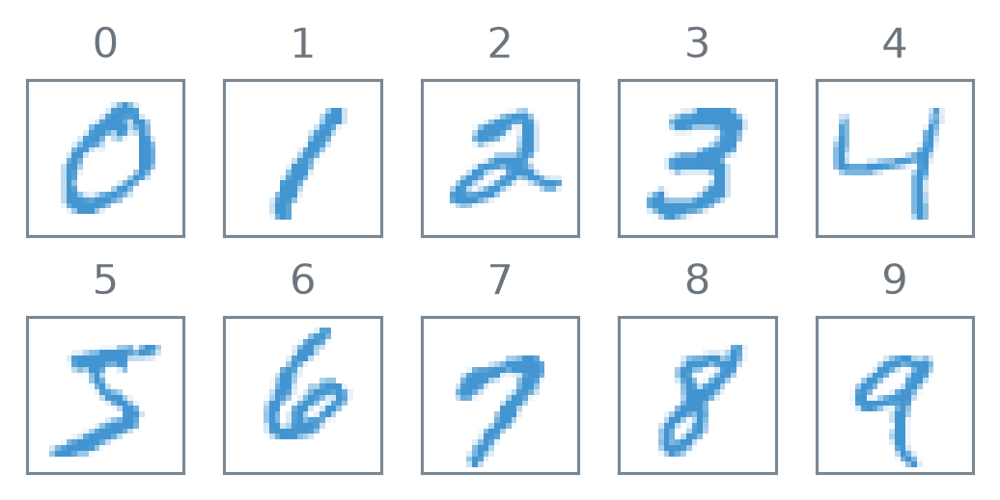
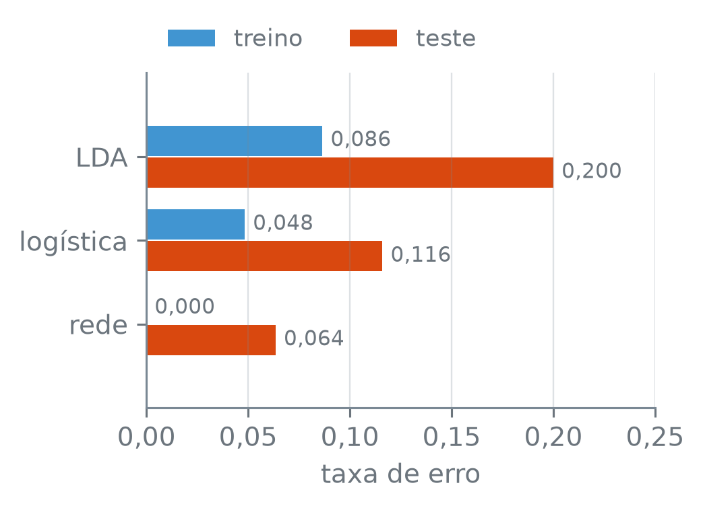

numero_br = lambda valor, casas=2: (
f"{valor:,.{casas}f}".replace(",", "_").replace(".", ",").replace("_", ".")
.replace("-", "−")
)Redes Multicamada
Nota
Esta seção corresponde à seção 10.2 de James et al. (2023).
Uma imagem de 28 × 28 pixels de um dígito escrito à mão é feita de 784 números, um por pixel. Um modelo linear nesses 784 números, como a regressão logística, reconhece o dígito com que taxa de erro? E uma rede com duas camadas escondidas, que monta as próprias variáveis a partir dos pixels?
A função numero_br escreve os números com a pontuação brasileira:
As imagens
O MNIST é uma coleção de dígitos de 0 a 9 escritos à mão por pessoas diferentes e digitalizados em imagens de 28 × 28 pixels, em tons de cinza. Cada pixel é um inteiro de 0, o fundo, a 255, o traço mais escuro. As duas tabelas usadas aqui trazem as primeiras 6.000 imagens do conjunto de treino do MNIST e as primeiras 2.000 do conjunto de teste, uma imagem por linha: a coluna digito tem o rótulo, e as colunas pixel_000 a pixel_783 têm os pixels, lidos linha a linha da imagem, da esquerda para a direita.
O código lê as duas tabelas, separa o rótulo dos pixels e divide os pixels por 255, para que fiquem entre 0 e 1:
treino = pd.read_csv("dados/mnist_treino.csv.gz")
teste = pd.read_csv("dados/mnist_teste.csv.gz")
print("treino:", treino.shape)
print("teste:", teste.shape)
pixels = treino.drop(columns="digito")
print("pixels: de", pixels.min().min(), "a", pixels.max().max())
treino_X = pixels / 255
treino_y = treino["digito"]
teste_X = teste.drop(columns="digito") / 255
teste_y = teste["digito"]
print("depois de dividir: de", numero_br(treino_X.min().min(), 0),
"a", numero_br(treino_X.max().max(), 0))
contagem = treino_y.value_counts().sort_index()
print("imagens por dígito no treino:")
print(" menos:", contagem.idxmin(), f"({contagem.min()})")
print(" mais:", contagem.idxmax(), f"({contagem.max()})")treino: (6000, 785)
teste: (2000, 785)
pixels: de 0 a 255
depois de dividir: de 0 a 1
imagens por dígito no treino:
menos: 5 (514)
mais: 1 (671)df.shape— o número de linhas e de colunas da tabela.df.drop(columns="digito")— a tabela sem a coluna dada.df.min().min()— o primeiromin()dá o menor valor de cada coluna, e o segundo, o menor entre eles; o mesmo commax().df / 255— divide todos os valores da tabela por 255.serie.value_counts()— quantas vezes aparece cada valor;.sort_index()ordena o resultado pelo valor, aqui de 0 a 9.serie.idxmin(),serie.idxmax()— o rótulo da posição com o menor e com o maior valor, aqui o dígito.
Cada tabela tem 785 colunas: o rótulo e os 784 pixels. No treino, o dígito com menos imagens é o 5, com 514, e o que tem mais é o 1, com 671; os dez dígitos aparecem em quantidades da mesma ordem. A figura mostra a primeira imagem de cada dígito no treino, com os 784 pixels de volta à grade de 28 × 28:
tinta = LinearSegmentedColormap.from_list(
"tinta", [to_rgba("C0", 0), to_rgba("C0", 1)])
fig, eixos = plt.subplots(2, 5, figsize=(3.8, 2.0))
for digito, ax in enumerate(eixos.ravel()):
linha = (treino_y == digito).idxmax()
imagem = treino_X.loc[linha].to_numpy().reshape(28, 28)
ax.imshow(imagem, cmap=tinta, vmin=0, vmax=1)
ax.set_title(str(digito))
ax.set_xticks([])
ax.set_yticks([])
ax.grid(False)
for lado in ax.spines.values():
lado.set_visible(True)
plt.tight_layout()
plt.show()
LinearSegmentedColormap.from_list(nome, [cor0, cor1])— uma escala de cores que vai decor0, no valor mínimo, acor1, no máximo.to_rgba("C0", opacidade)dá o azulC0do estilo com a opacidade dada, de 0 (transparente) a 1.(treino_y == digito).idxmax()— o rótulo da primeira linha em que a comparação dáTrue, isto é, a primeira imagem do dígito;df.loc[linha]é a linha da tabela com esse rótulo.serie.to_numpy().reshape(28, 28)— os 784 valores numa grade de 28 linhas por 28 colunas, na ordem em que foram lidos.ax.imshow(grade, cmap, vmin, vmax)— desenha a grade como imagem, um quadradinho por valor, com a cor dada pela escalacmapentrevminevmax.ax.set_xticks([]),ax.set_yticks([]),ax.grid(False)— tiram as marcas dos eixos e a malha;ax.spinessão as quatro bordas, queset_visible(True)mostra, para desenhar a moldura.
Para o modelo, cada imagem é um vetor \(X = (X_1, \dots, X_p)\), com \(p = 784\), e a resposta \(Y\), o dígito, é qualitativa, com dez classes de 0 a 9. Ela entra no ajuste como dez variáveis indicadoras \(Y_0, Y_1, \dots, Y_9\): \(Y_m\) vale 1 se \(Y = m\) e 0 se não, de modo que cada imagem tem um único 1. Essa representação é chamada de one-hot. O MLPClassifier, a rede do scikit-learn para classificação, faz a conversão sozinho a partir dos rótulos; o código abaixo só a mostra, para as quatro primeiras imagens do treino:
quatro = treino_y.iloc[:4].to_numpy()
indicadoras = np.eye(10, dtype=int)[quatro]
print(pd.DataFrame(indicadoras, index=quatro).to_string()) 0 1 2 3 4 5 6 7 8 9
5 0 0 0 0 0 1 0 0 0 0
0 1 0 0 0 0 0 0 0 0 0
4 0 0 0 0 1 0 0 0 0 0
1 0 1 0 0 0 0 0 0 0 0np.eye(10, dtype=int) — a matriz identidade 10 × 10, com 1 na diagonal e 0 fora dela; a linha \(m\) tem um único 1, na coluna \(m\). matriz[quatro] — as linhas da matriz nas posições dadas por quatro, uma por imagem.
Cada linha é uma imagem, com o dígito à esquerda, e o único 1 da linha fica na coluna do dígito.
Duas camadas escondidas
Uma rede de camada única, como a da seção 14.1, com unidades suficientes, consegue aproximar quase qualquer função dos preditores; esse é um resultado teórico, que não diz quantas unidades seriam necessárias nem como achar os pesos. Na prática, achar bons pesos costuma ser mais fácil com várias camadas de tamanho moderado, em que cada camada recebe as ativações da anterior (James et al. 2023). A rede abaixo tem duas camadas escondidas, \(L_1\) com \(K_1 = 256\) unidades e \(L_2\) com \(K_2 = 128\), e dez saídas, uma por dígito:
colunas = [
(0, [1.5, 0.5, -0.5, -1.5], "0.45", "entrada", "784"),
(1, [1.5, 0.5, -0.5, -1.5], "C0", "$L_1$", "256"),
(2, [1, 0, -1], "C0", "$L_2$", "128"),
(3, [1, 0, -1], "C1", "saída", "10"),
]
ligacao = dict(arrowstyle="-", color="0.45", linewidth=0.4,
alpha=0.7, shrinkA=7, shrinkB=7)
fig, ax = plt.subplots(figsize=(3.8, 3.0))
for (x0, ys0, *_), (x1, ys1, *_) in zip(colunas[:-1], colunas[1:]):
for y0 in ys0:
for y1 in ys1:
ax.annotate("", xy=(x1, y1), xytext=(x0, y0),
arrowprops=ligacao)
for x, ys, cor, nome, unidades in colunas:
ax.scatter([x] * len(ys), ys, s=160, facecolors="none",
edgecolors=cor, linewidths=1.5)
ax.text(x, min(ys) - 0.75, "⋮", ha="center", va="center")
ax.text(x, 2.35, nome, ha="center")
ax.text(x, -2.85, unidades, ha="center")
for x, peso in [(0.5, "$w^{(1)}$"), (1.5, "$w^{(2)}$"),
(2.5, r"$\beta$")]:
ax.text(x, 1.95, peso, ha="center")
ax.set_xlim(-0.4, 3.4)
ax.set_ylim(-3.1, 2.8)
ax.axis("off")
plt.tight_layout()
plt.show()![Diagrama com quatro colunas de círculos ligadas por linhas finas da esquerda para a direita. A primeira coluna, cinza, é a entrada, com 784 embaixo. A segunda e a terceira, azuis, são as camadas escondidas L1 e L2, com 256 e 128 embaixo. A quarta, laranja, é a saída, com 10 embaixo. Cada círculo de uma coluna está ligado a cada círculo da seguinte. Reticências verticais em cada coluna indicam os círculos omitidos. Entre as colunas, os rótulos w(1), w(2) e beta, os pesos que ligam uma coluna à seguinte.](02-redes-multicamada_files/figure-html/fig-camadas-output-1.png)
Numa rede multicamada com duas camadas escondidas, a primeira camada calcula, para \(k = 1, \dots, K_1\), \[ A^{(1)}_k = g\Big(w^{(1)}_{k0} + \sum_{j=1}^{p} w^{(1)}_{kj} X_j\Big), \] com \(g\) a função de ativação, a ReLU da seção 14.1. A segunda camada faz o mesmo com as ativações da primeira no lugar dos pixels, para \(\ell = 1, \dots, K_2\): \[ A^{(2)}_\ell = g\Big(w^{(2)}_{\ell 0} + \sum_{k=1}^{K_1} w^{(2)}_{\ell k} A^{(1)}_k\Big). \] O índice entre parênteses diz a camada.
As ativações \(A^{(2)}_\ell\) da segunda camada são funções das ativações da primeira, que são funções dos pixels; logo, as da segunda também são funções dos pixels, por uma cadeia de transformações. A saída trata essas \(K_2\) variáveis montadas pela rede como preditores:
Para cada classe \(m = 0, 1, \dots, 9\), a camada de saída calcula uma combinação linear \[ Z_m = \beta_{m0} + \sum_{\ell=1}^{K_2} \beta_{m\ell} A^{(2)}_\ell, \] e a função softmax leva os dez \(Z_m\) a probabilidades: \[ \begin{aligned} f_m(X) &= \Pr(Y = m \mid X)\\ &= \frac{e^{Z_m}}{\sum_{r=0}^{9} e^{Z_r}}. \end{aligned} \] A rede classifica a imagem no dígito de maior probabilidade.
As dez probabilidades são positivas e somam 1, qualquer que seja o valor dos \(Z_m\). A softmax é a mesma função da logística multinomial da seção 9.3, em que cada classe tinha a sua combinação linear dos preditores. A diferença está no que entra na combinação linear: lá, os próprios preditores; aqui, as ativações \(A^{(2)}_\ell\). Sem camadas escondidas, com os \(Z_m\) calculados direto dos pixels, a rede seria a logística multinomial.
O MLPClassifier ajusta a rede das duas camadas às 6.000 imagens de treino, com a ReLU como ativação \(g\). Os tamanhos 256 e 128 e a semente 14 são valores fixos, não ajustados; escolher o tamanho de uma rede sem olhar o teste é assunto da seção 14.4.
rede = MLPClassifier(hidden_layer_sizes=(256, 128),
random_state=14)
rede.fit(treino_X, treino_y)
print("épocas:", rede.n_iter_)
print("saída:", rede.out_activation_)
for camada, (W, b) in enumerate(
zip(rede.coefs_, rede.intercepts_), start=1):
print(f"camada {camada}: {W.shape},",
numero_br(W.size + b.size, 0), "pesos")
pesos = (sum(W.size for W in rede.coefs_)
+ sum(b.size for b in rede.intercepts_))
print("pesos da rede:", numero_br(pesos, 0))épocas: 47
saída: softmax
camada 1: (784, 256), 200.960 pesos
camada 2: (256, 128), 32.896 pesos
camada 3: (128, 10), 1.290 pesos
pesos da rede: 235.146MLPClassifier(hidden_layer_sizes, random_state) — a rede neural de classificação do scikit-learn. hidden_layer_sizes=(256, 128) pede duas camadas escondidas, com 256 e 128 unidades; a ativação padrão é a ReLU. Os pesos iniciais são sorteados, e as imagens são embaralhadas a cada passada pelo treino; random_state fixa os dois sorteios. rede.n_iter_ — quantas vezes o ajuste percorreu todas as imagens de treino, as épocas da seção 14.3. O ajuste para sozinho quando a perda de treino passa 10 épocas seguidas sem cair mais que uma pequena tolerância, ou quando chega ao limite max_iter, de 200 épocas no padrão. rede.out_activation_ — a função aplicada na saída: "softmax" quando há mais de duas classes.
O ajuste parou em 47 épocas, antes do limite de 200, e a saída é a softmax. Todos os números da rede, os \(w\) e os \(\beta\), são chamados de pesos, e os interceptos, como \(w^{(1)}_{k0}\) e \(\beta_{m0}\), de vieses (biases); esse viés não tem relação com o da decomposição em viés e variância da seção 7.6. Na figura, \(w^{(1)}\) reúne todos os \(w^{(1)}_{kj}\) da camada 1, vieses incluídos, \(w^{(2)}\) todos os \(w^{(2)}_{\ell k}\) e \(\beta\) todos os \(\beta_{m\ell}\). coefs_[0] é a tabela dos \(w^{(1)}_{kj}\), com uma linha por pixel e uma coluna por unidade de \(L_1\), e a camada 1 soma a esses \(784 \times 256\) pesos os seus 256 vieses: \(784 \times 256 + 256 = 785 \times 256 = 200.960\). Do mesmo jeito, a camada 2 tem \((256 + 1) \times 128 = 32.896\), e a de saída, \((128 + 1) \times 10 = 1.290\). O total é \(200.960 + 32.896 + 1.290 = 235.146\) pesos.
Para cada imagem, a rede devolve dez probabilidades, uma por dígito. O código mostra as da primeira imagem de teste e as da primeira imagem de teste que a rede classifica errado:
proba = rede.predict_proba(teste_X)
print("probabilidades:", proba.shape)
previsto = rede.predict(teste_X)
errada = int((previsto != teste_y).to_numpy().argmax())
duas = [0, errada]
print("imagens de teste:", [i + 1 for i in duas])
print("dígito certo:", teste_y.iloc[duas].tolist())
print("dígito previsto:", previsto[duas].tolist())
tabela = pd.DataFrame(
{f"{i + 1}ª": proba[i] for i in duas},
index=rede.classes_)
print(tabela.map(lambda p: numero_br(p, 3)).to_string())
print("todas somam 1:", np.allclose(proba.sum(axis=1), 1))
print("predict = a maior:",
(proba.argmax(axis=1) == previsto).all())probabilidades: (2000, 10)
imagens de teste: [1, 9]
dígito certo: [7, 5]
dígito previsto: [7, 6]
1ª 9ª
0 0,000 0,018
1 0,000 0,000
2 0,000 0,003
3 0,000 0,000
4 0,000 0,065
5 0,000 0,022
6 0,000 0,891
7 1,000 0,000
8 0,000 0,000
9 0,000 0,000
todas somam 1: True
predict = a maior: Truerede.predict_proba(X) — as probabilidades de cada classe, uma linha por imagem e uma coluna por classe, na ordem de rede.classes_ (aqui, de 0 a 9). (previsto != teste_y).to_numpy().argmax() — a posição do primeiro True, isto é, a primeira imagem classificada errado; int a escreve como número comum. As posições começam em 0, e por isso o código soma 1 ao escrevê-las. serie.iloc[posicoes] — os valores nas posições dadas; .tolist() os escreve como lista. df.map(f) — aplica f a cada valor da tabela, aqui para escrevê-lo com a vírgula. proba.sum(axis=1) — a soma de cada linha. proba.argmax(axis=1) — a posição do maior valor de cada linha; como as classes vão de 0 a 9, a posição é o próprio dígito. (a == b).all() — True se as duas sequências são iguais em todas as posições.
A primeira imagem de teste é um 7, e a rede dá ao 7 probabilidade 1,000 e aos outros nove dígitos 0,000, em três casas. A 9ª imagem de teste é a primeira que a rede erra: é um 5, e a rede reparte quase toda a probabilidade entre cinco dígitos, com 0,891 no 6, 0,065 no 4, 0,022 no 5, 0,018 no 0 e 0,003 no 2; o 6 tem a maior, e é ele o previsto. As 2.000 linhas somam 1, e o predict é sempre o dígito de maior probabilidade.
A perda que o ajuste minimiza
Os pesos são escolhidos para que a rede dê probabilidade alta ao dígito certo de cada imagem de treino. Com \(y_{im}\) igual a 1 se a imagem \(i\) é do dígito \(m\) e 0 se não é, a medida é a entropia cruzada \[
-\sum_{i=1}^{n} \sum_{m=0}^{9} y_{im} \log f_m(x_i).
\] Em cada imagem, só a parcela do dígito certo tem \(y_{im} = 1\), e a soma de dentro vale \(-\log\) da probabilidade que a rede dá a esse dígito: próxima de 0 se a probabilidade é próxima de 1, e grande se ela é próxima de 0. Minimizar a entropia cruzada é maximizar a verossimilhança, o critério com que a regressão logística da seção 9.2 escolhia os coeficientes. O MLPClassifier minimiza a entropia cruzada média, a soma dividida por \(n\), mais uma penalidade pequena sobre o tamanho dos pesos, controlada pelo parâmetro alpha.
certa = proba[np.arange(len(teste_y)), teste_y]
for i in duas:
print(f"imagem {i + 1}:",
"p =", numero_br(certa[i], 3) + ",",
"parcela =", numero_br(-np.log(certa[i]), 3))
media_treino = log_loss(treino_y, rede.predict_proba(treino_X))
print("média no treino:", numero_br(media_treino, 4))
print("alpha:", numero_br(rede.alpha, 4))
print("perda do ajuste:", numero_br(rede.loss_, 4))
print("perda acima da média:", rede.loss_ > media_treino)imagem 1: p = 1,000, parcela = 0,000
imagem 9: p = 0,022, parcela = 3,811
média no treino: 0,0006
alpha: 0,0001
perda do ajuste: 0,0008
perda acima da média: Trueproba[np.arange(n), teste_y] — em cada linha \(i\), a coluna do dígito certo daquela imagem: a probabilidade que a rede dá à resposta certa. log_loss(y, proba) — a entropia cruzada média, a soma de \(-\log\) da probabilidade do dígito certo dividida pelo número de imagens. rede.alpha — o peso da penalidade sobre os pesos; o padrão é 0,0001. rede.loss_ — a perda média da última época, calculada lote a lote enquanto os pesos ainda mudavam, com a penalidade incluída.
Na primeira imagem de teste, o 7 recebe probabilidade 1,000, e a parcela é 0,000. Na 9ª, o 5 recebe só 0,022, e a parcela é 3,811: é nas imagens em que a rede dá pouca probabilidade ao dígito certo que a entropia cruzada cresce. A entropia cruzada média nas 6.000 imagens de treino é 0,0006; a perda do ajuste, 0,0008, fica acima dela porque inclui a penalidade de alpha igual a 0,0001 e porque é uma média feita ao longo da última época, com os pesos ainda mudando.
Treino e teste
A rede tem 235.146 pesos para 6.000 imagens de treino. O que esperar do erro dela no treino? E no teste, em imagens que ela não viu? Faça um palpite antes da saída:
erros_treino = (rede.predict(treino_X) != treino_y).sum()
erros_rede = (rede.predict(teste_X) != teste_y).sum()
print("pesos por imagem de treino:",
numero_br(pesos / len(treino_y), 1))
print("erros no treino:", erros_treino, "de", len(treino_y))
print("erros no teste:", erros_rede, "de", len(teste_y))
print("entropia média no teste:",
numero_br(log_loss(teste_y, proba), 3))pesos por imagem de treino: 39,2
erros no treino: 0 de 6000
erros no teste: 127 de 2000
entropia média no teste: 0,298(previsto != y).sum() — quantas previsões diferem do rótulo, isto é, o número de erros.
São 39,2 pesos por imagem de treino, e a rede não erra nenhuma das 6.000. No teste, erra 127 das 2.000, e a entropia cruzada média sobe para 0,298. Com tantos pesos, a rede pode se ajustar a detalhes das imagens de treino que não se repetem nas de teste. A penalidade alpha, pequena no padrão, e outras formas de conter o ajuste são assunto da seção 14.3.
Contra os modelos lineares
Dois modelos do capítulo 9 separam as classes com fronteiras lineares nos pixels: a LDA, da seção 9.7, e a logística multinomial, da seção 9.3. A logística vai aqui com uma penalidade ridge nos coeficientes, como a da seção 11.3, controlada pelo parâmetro C. O valor C=0.1 é fixo, não foi escolhido com o teste; a escolha por validação cruzada seria a da seção 11.5. A logística tem uma combinação linear dos 784 pixels por dígito. Antes de rodar o código, um palpite: ela erra mais ou menos que a rede nas 2.000 imagens de teste? E a LDA? E, no treino, qual dos três erra menos?
lda = LinearDiscriminantAnalysis().fit(treino_X, treino_y)
logistica = LogisticRegression(C=0.1, max_iter=1000)
logistica.fit(treino_X, treino_y)
print("logística parou antes do limite:",
logistica.n_iter_[0] < 1000)
print("pixels sempre 0 no treino:",
(treino_X.max() == 0).sum())
print("coef_ da logística:", logistica.coef_.shape)
pesos_log = logistica.coef_.size + logistica.intercept_.size
print("pesos da logística:", numero_br(pesos_log, 0))
modelos = {"LDA": lda, "logística": logistica, "rede": rede}
conta = lambda m, X, y: (m.predict(X) != y).sum()
erros = pd.DataFrame({
"teste": {nome: conta(m, teste_X, teste_y)
for nome, m in modelos.items()},
"treino": {nome: conta(m, treino_X, treino_y)
for nome, m in modelos.items()},
})
taxas = erros / pd.Series({"teste": len(teste_y),
"treino": len(treino_y)})
print("erros:")
print(erros.to_string())
print("taxas de erro:")
print(taxas.map(lambda v: numero_br(v, 3)).to_string())
e = erros["teste"]
print("rede < logística < LDA:",
e["rede"] < e["logística"] < e["LDA"])
print("rede / logística:", numero_br(e["rede"] / e["logística"]))
print("treino abaixo do teste:",
(taxas["treino"] < taxas["teste"]).all())logística parou antes do limite: True
pixels sempre 0 no treino: 120
coef_ da logística: (10, 784)
pesos da logística: 7.850
erros:
teste treino
LDA 400 519
logística 232 290
rede 127 0
taxas de erro:
teste treino
LDA 0,200 0,086
logística 0,116 0,048
rede 0,064 0,000
rede < logística < LDA: True
rede / logística: 0,55
treino abaixo do teste: TrueLinearDiscriminantAnalysis() — a LDA da seção 9.7. LogisticRegression(C, max_iter) — a regressão logística; com mais de duas classes, a multinomial, na forma softmax. C é o inverso da força da penalidade ridge sobre os coeficientes: quanto menor o C, mais os coeficientes são puxados para zero; o padrão é C=1. max_iter é o número máximo de passos do método que procura os coeficientes (o padrão é 100); os 1.000 daqui são uma folga, para que o ajuste pare por convergência e não pelo limite, e logistica.n_iter_ diz quantos passos ele deu. logistica.coef_ — os coeficientes, uma linha por classe e uma coluna por preditor; logistica.intercept_, um intercepto por classe. pd.DataFrame({coluna: {linha: valor}}) — uma tabela a partir de dicionários, com as chaves de dentro como rótulos das linhas. pd.Series({rotulo: valor}) — uma série a partir de um dicionário, com as chaves como rótulos. erros / pd.Series({coluna: n}) — divide cada coluna da tabela pelo valor de mesmo nome na série. treino_X.max() == 0 — True nas colunas cujo maior valor é 0, isto é, nos pixels que valem 0 em todas as imagens de treino; .sum() conta esses True.
A logística parou antes do limite de passos. Os pixels entram nela sem padronizar, ao contrário da regra da seção 11.3 para a ridge: a padronização põe na mesma escala colunas medidas em unidades diferentes, e aqui os 784 pixels já estão na mesma unidade, a intensidade de 0 a 1 (120 deles valem 0 em todas as imagens de treino). O mesmo vale para a penalidade alpha da rede, que também recebe os pixels de 0 a 1. A logística tem 10 linhas de 784 coeficientes e 10 interceptos, 7.850 pesos, uma combinação linear dos pixels por dígito.
No teste, a LDA erra 400 das 2.000 imagens, a logística 232 e a rede 127: a rede erra menos que a logística, e a logística menos que a LDA. A razão entre os erros da rede e os da logística é 0,55, pouco mais que a metade. No treino, a LDA erra 519 das 6.000 imagens, a logística 290 e a rede nenhuma, e nos três modelos a taxa de treino fica abaixo da de teste:
ordem = ["rede", "logística", "LDA"]
posicoes = np.arange(len(ordem))
fig, ax = plt.subplots(figsize=(3.8, 2.8))
for coluna, cor, desvio in [("treino", "C0", 0.19),
("teste", "C1", -0.19)]:
valores = taxas.loc[ordem, coluna]
ax.barh(posicoes + desvio, valores, height=0.36,
color=cor, label=coluna)
for y, valor in zip(posicoes + desvio, valores):
ax.text(valor + 0.004, y, numero_br(valor, 3),
va="center", fontsize=8)
ax.set_yticks(posicoes, ordem)
ax.set_xlim(0, 0.25)
ax.set_xlabel("taxa de erro")
ax.grid(axis="y", visible=False)
ax.xaxis.set_major_formatter(
lambda v, _: numero_br(v, 2))
ax.legend(loc="lower left", bbox_to_anchor=(0, 1.0), ncol=2)
plt.tight_layout()
plt.show()
ax.barh(posicoes, valores, height, color, label) — uma barra horizontal em cada posição vertical, com o comprimento dado pelo valor; height é a espessura da barra. Deslocar as posições para cima e para baixo põe as duas barras de cada modelo lado a lado. ax.set_yticks(posicoes, rotulos) — escreve os nomes dos modelos nas posições dadas. df.loc[linhas, coluna] — os valores da coluna nas linhas dadas, na ordem pedida. ax.grid(axis="y", visible=False) — tira só as linhas da malha que acompanham o eixo vertical.
A pergunta do começo tem resposta nestes dados: a rede de duas camadas escondidas erra menos imagens de teste que os dois modelos lineares, a LDA e a logística com C=0.1. A rede não recebeu nenhuma variável além dos pixels: a saída dela combina 128 variáveis que as duas camadas montaram a partir deles, com pesos estimados nas imagens de treino. A diferença medida é a destes três ajustes, nesta divisão (6.000 imagens de treino e 2.000 de teste), com C fixo para a logística e uma semente para a rede. Outra semente sorteia outros pesos iniciais e outra ordem das imagens, e, como outro C, pode mudar as contagens; a seção 14.3 volta a isso.
James, Gareth, Daniela Witten, Trevor Hastie, Robert Tibshirani, e Jonathan Taylor. 2023. An Introduction to Statistical Learning with Applications in Python. Springer.